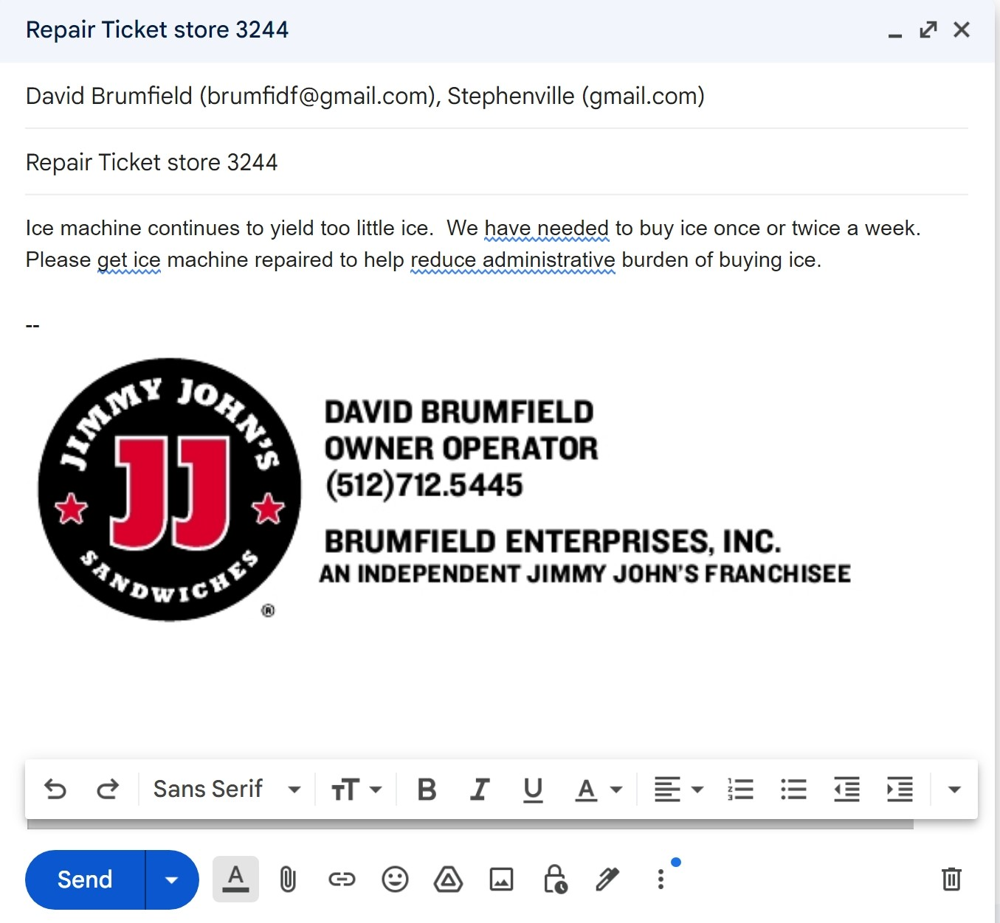

Submit Repair Tickets by Email to brumfidf@gmail.com
Include the store, equipment involved, pictures if necessary, what is needed to resolve, and what urgency is needed based on how it affects service.
Example:

Determine first if you’re able to resolve the issue without submitting a ticket. The following list are examples of things you can resolve and resources to do so:
Signature Systems (877)968-6430 or support@pdqpos.com Connect with signature systems to resolve POS issues, receipt printers communication and power issues, Card reader issues, and menu pricing issues. Receipt printers not printing clearly are caused by debris. Clean as needed with compressed air around the gears to resolve the issue.
Vivant Internet (469)620-8888 Connect with Vivant regarding internet issues. Backup internet should kick in 30-45 seconds after a primary internet outage occurs. Phone should work properly while on backup internet, if internet is too slow, you can try adjusting the antennas on the router with multiple colored ethernet cords to improve the 4G LTE signal.
Walk-in fridge/freezer Cold tables and Walk-ins are scheduled to defrost periodically to keep them running smoothly. If timed properly, you can clean the cold table during defrost and not turn it off. If you catch the Walk-in defrosting, DON’T shut it off at the breaker and turn it back on. You will reset the defrost timer which can cause issues. First, allow 30-45 minutes for the defrost cycle to complete. If you’re still having an issue, flip the breaker off and on. If you’re still having an issue, flip it off for 10 minutes then back on. Contact David (512-712-5445) if flipping the breaker resolved the issue or not.
Drive-Thru Headset Any issues with headsets should be resolved immediately, you can prepare a shipping label here. The exception is RGV stores, please submit a ticket for headset issues instead. We purchase the batteries on Amazon.
Ice machine The most common issue with ice machines is changing the filter every 3 months or having a defective filter. Water filters plug up and reduce water pressure to the machine. When the water pressure is incorrect, the ice machine will stop functioning properly in a variety of ways. Whenever an ice machine has issues, change the filter first, then reset a cycle using the button on the motherboard. If issues persist, open a repair ticket.
Coca-Cola - (800-241-2653) We do not own the Coke Machine, Bag-in-Box shelf/tubes, Co2 compressor. All of these items are owned and maintained by Coca-Cola. They will do 4 repair visits per year free of charge. They also provide up to $40 of free parts per month. Change your diffusers, metal grates, and clear tubes as needed by calling and ordering the parts to your store.
Oven When your bread is baking to the wrong color, it’s frequently your proofer. Clean the probe cover monthly and change the box cover every 6 months to proof well. When the probe cover is first clean, your humidity % will run higher (75-85%) but as it gets dirty it will run (60-75%) Heat should stay around a constant 110 degrees and it will always overheat when running without product in it. If you’re still having issues with bread color, your oven gasket likely needs replaced. Please submit a ticket to have it replaced.